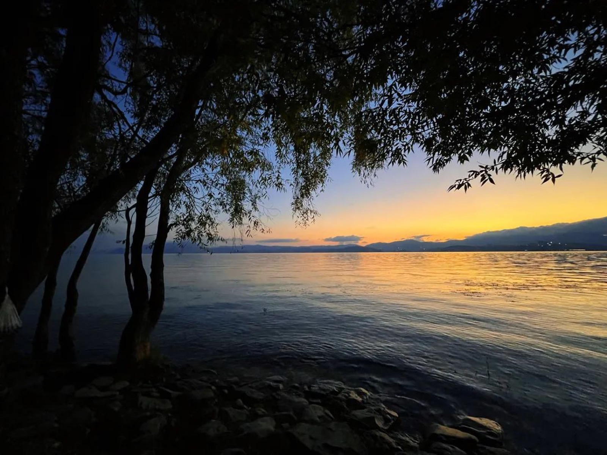
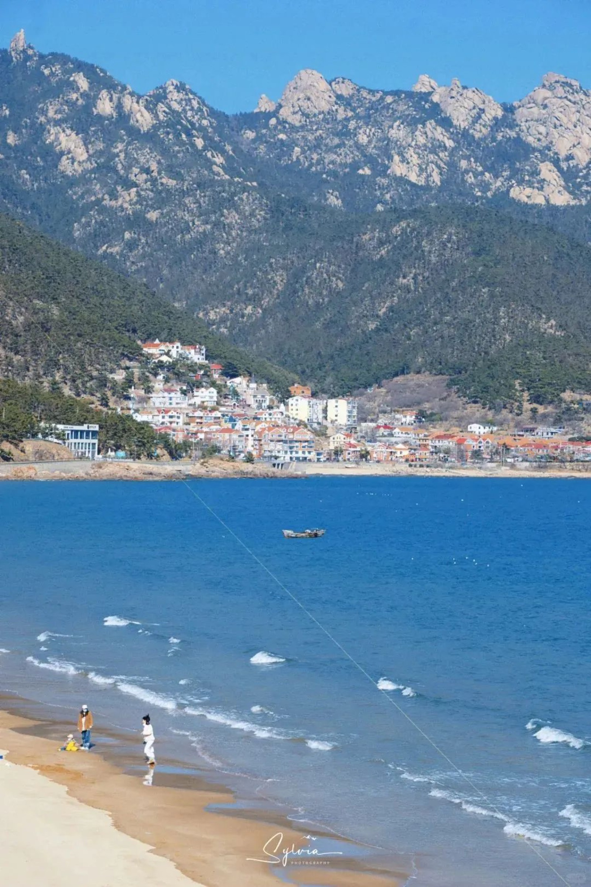

 2024.05.01 — 05.07云南 · 昆明 → 大理 → 丽江7 天 云南环线：从滇池到玉龙 七天一千二百公里，滇池的海鸥、洱海的日落、玉龙的初雪。哥哥在缆车上睡着了，醒来第一句话是"云在我脚下"。 亲子自驾高原 爸妈哥
 2023.08.12 — 08.15山东 · 青岛4 天 赶海的小孩 退潮后的礁石滩是一座没有围墙的自然博物馆。哥哥蹲了两小时不肯走，带回一只寄居蟹和满裤腿的沙。 亲子海滨 爸妈哥